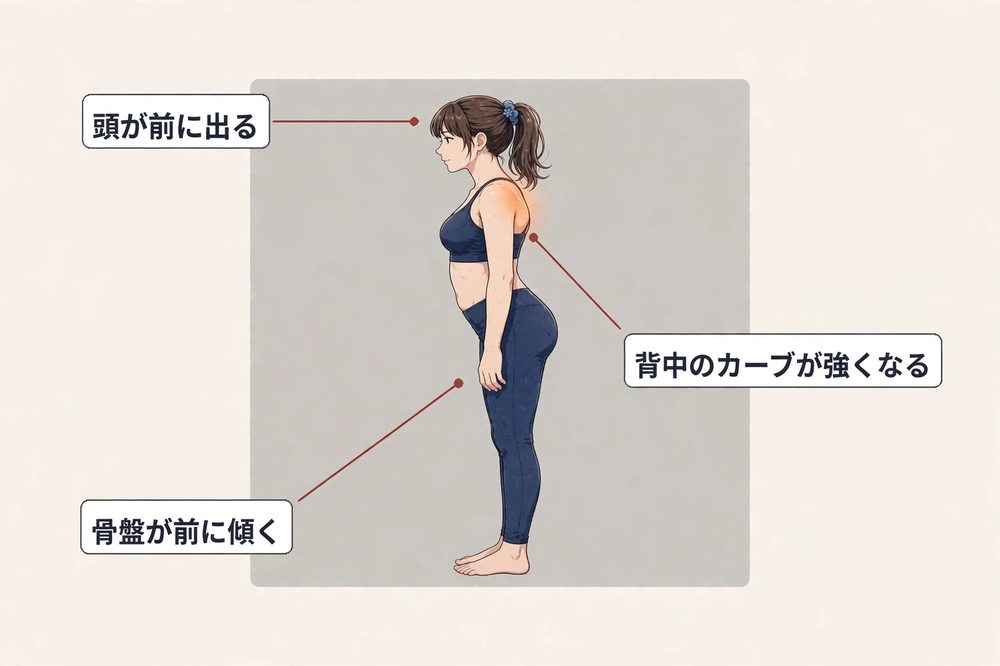

猫背・円背
美容整体ステラ・ポラリス東三国｜大阪市淀川区東三国・東三国駅徒歩5分・女性向け

巻き肩を広げてバストラインを上げる。姿勢から整える猫背ケア
背中が丸まった姿勢は、後ろ姿が老けて見える、胸が下がって見える、下腹が出て見えるといった見た目の印象に加え、肩や首のコリ、呼吸の浅さにもつながると言われています。反対に、身体の軸が整った姿勢は、背筋が伸びて後ろ姿がすっきり見え、胸が開いてバストラインも上がって見えるもの。このページでは、猫背・円背の背景にある仕組みと、軸の整った姿勢を目指す当サロンでのケア、ご自宅でできるセルフケアをご案内します。まずは下のチェックで、ご自身の状態を確かめてみてください。
ご予約はこちら（Coubic）こんなお悩みありませんか
- 写真に写った自分の後ろ姿を見て、背中の丸さに驚いたことがある
- デスクワークの終わりごろになると、肩や首が重く感じる
- スマートフォンを見ていると、いつの間にか頭が前に出ている
- 深呼吸をしても、胸いっぱいに空気が入らない感じがする
- 姿勢を正そうとしても、数分で元の丸まった姿勢に戻ってしまう
- 肩が内側に入る「巻き肩」が気になっている
- 夕方になると背中や腰まわりが重だるく、姿勢が崩れやすい
当てはまる項目が多いほど、日常の姿勢のクセが積み重なっている目安とされています。裏を返せば、クセに気づいて整えていくことで、後ろ姿の印象を変えていけるということでもあります。次のセルフチェックで、今の姿勢の傾向を確かめてみましょう。
簡単セルフチェック（壁チェック）
壁を使った、姿勢の傾向を知るための簡単な方法です。
- 壁に背を向けて立ち、かかと・お尻・背中・後頭部の4点を壁につけます。
- 力を入れて胸を張るのではなく、自然に立った状態で4点がつくかを確認します。
- 後頭部が壁につかない、あごが上がってしまう、腰と壁の間に手のひら以上のすき間がある場合は、頭や肩が前に出る姿勢のクセがついている目安と言われています。
※これは診断ではありません。ご自身の姿勢の傾向を知る目安としてお使いください。
猫背・円背の原因と仕組み
デスクワークとスマートフォンの姿勢
猫背は、背中が丸まり、頭と肩が前に出た姿勢の状態を指します。パソコンやスマートフォンの画面をのぞき込む姿勢は、頭が前に出て背中が丸まりやすく、1日のうち長い時間をその姿勢で過ごすほど、体はその形を「いつもの姿勢」として覚えていくと言われています。とくに画面の位置が低いとあごが下がり、首から背中にかけての負担が増えやすいとされています。図1のように、背中の丸まりは首・肩・胸・お腹の見え方にもつながっていきます。

図1 猫背の姿勢で起こりやすい変化と、身体の軸が整った姿勢のイメージ。姿勢の状態には個人差があります。
前と後ろの筋肉のバランス
丸まった姿勢が続くと、胸の前の筋肉は縮んだままの状態に、背中側の筋肉は引き伸ばされたままの状態になりやすいと言われています。胸まわりが縮むと肩が内側に入る巻き肩につながり、背中側は常に引き伸ばされることで重だるさを感じやすくなります。前と後ろ、どちらか一方ではなく、両方のバランスが崩れることが、姿勢を保ちにくさの背景にあると考えられています。
肩甲骨の動きと呼吸
背中の上部にある肩甲骨は、本来、背中の上を滑るように動く骨です。姿勢が丸まると肩甲骨が外側に開いたまま動きにくくなり、腕の上げ下げや深い呼吸にも影響すると言われています。胸が閉じた姿勢では肺が広がるスペースも限られ、呼吸が浅くなりやすいため、姿勢と呼吸は切り離せない関係にあります。
クセの積み重ね
姿勢は、骨格だけでなく日々の習慣の積み重ねで形づくられます。いつも同じ側にバッグを持つ、足を組む、ソファに浅く座るといった何気ない習慣も、体の使い方の偏りにつながると言われています。背骨を一本の軸として、余分な力を抜いてまっすぐに立つ感覚を身につけることが、姿勢づくりの土台になります。クセに気づくことが、姿勢を見直す第一歩になります。
セルフケアで足りる場合・サロンケアが向く場合
違和感が軽く、ストレッチや姿勢の見直しをしたあとに体が軽く感じる日が多い場合は、まずご自宅でのセルフケアを続けて様子を見る方法があります。一方で、胸まわりが自分ではゆるめにくい、まっすぐな姿勢を保つ感覚がつかみにくい、自分の姿勢のクセをプロの目で確認したいという場合は、サロンでのケアが向いている目安になります。サロンでは、ほぐしと美容整体を組み合わせて、施術後に「背筋が伸びた」「胸が開いて呼吸がしやすい」と感じやすい状態を目指します。どちらが正解というものではなく、今の状態に合わせて選ぶことが大切です。
当サロンでのケア
当サロンの猫背ケアは、「身体の軸が整った姿勢」を目指す組み立てです。まず現在の姿勢のクセを一緒に確認し、部位と目的に合わせて3つの手技を組み合わせます。
美容整体：肩の位置と背骨のラインを整え、背筋が伸びた姿勢の土台をつくることを目的に。丸まった背中をゆるやかに開き、「まっすぐ立つ」感覚を取り戻すお手伝いをします。
アロマオイルマッサージ：縮こまりやすい胸まわりや首・肩をオイルでゆるめ、胸が開きやすい状態を目指します。香りに包まれながらほぐれる、リラックス感の高いケアです。
もみほぐし：引き伸ばされて重だるくなりやすい背中側の筋肉や、ガチガチになりやすい肩甲骨まわりをほぐし、動きを引き出すことを目的に進めます。
ケアを通して目指すのは、こんな変化です。
- 背筋が伸びて、後ろ姿がすっきり見える姿勢へ
- 胸が開いて、バストラインが上がって見える姿勢へ
- 下腹がぽっこり出て見える一因になる、背中の丸まりや骨盤の傾きにアプローチ
- 首・肩のコリをほぐして、前に出やすい頭の位置を軸の上に整える
- 肩甲骨まわりが動きやすくなり、深呼吸がしやすい感覚へ
施術の仕上げには、胸を開いた姿勢を保つコツと深呼吸のポイントもお伝えし、施術後に「背筋が伸びた」「胸が開いて呼吸がしやすい」と感じられるような体感を大切にしています。姿勢のクセは一日で変わるものではありませんが、整った姿勢の心地よさを知ることが、日常の姿勢を見直すきっかけになります。

施術の流れ
ご来店後、気になる部位や姿勢のお悩み、ご希望の強さなどをうかがいます。完全個室のため、周りを気にせずお話しいただけます。
立った姿勢や肩の位置などを一緒に確認し、その日の状態に合わせた施術の進め方をご案内します。
美容整体を中心に、ご希望に応じてアロマオイルマッサージ、もみほぐしを組み合わせて進めます。強さは途中でも調整できます。
施術後の状態を確認し、ご自宅で続けやすいセルフケアのポイントをお伝えします。次回の目安についても、ご希望があればご案内します。
料金
| コース | 通常価格 | キャンペーン価格（12/25まで） |
|---|---|---|
| 80分 | 8,000円 | 3,000円 |
| 100分 | 10,000円 | 4,000円 |
| 120分 | 12,000円 | 5,000円 |
クリスマスキャンペーンは12月25日まで、ご新規様もリピーターの方も対象です。施術内容は当日の状態とご希望に合わせて組み立てます。
ご自宅でできるセルフケア
- 胸を開くストレッチ：ドアの枠や壁に前腕をつけ、体を少し前に傾けて胸の前を伸ばします。左右それぞれ20〜30秒を2セット、1日1〜2回が目安です。痛みのない範囲で行ってください。
- 肩甲骨を寄せる動き：椅子に座り、両肘を後ろに引いて肩甲骨同士を寄せるように意識します。ゆっくり10回を2セット、デスクワークの合間に取り入れるのがおすすめです。
- 1時間に一度のリセット：長時間座り続けたときは一度立ち上がり、両手を組んで天井へ伸ばすストレッチをします。姿勢を保つことより、固まる前にほぐす習慣が大切です。
- 坐骨で座る意識：椅子に座るときは、お尻の骨（坐骨）で座る意識を持ち、背もたれに寄りかかりすぎないようにします。
ご自宅でのケアに：セルフケア資料ライブラリ（無料）
このお悩みに合わせたセルフケアの考え方を、無料の資料ライブラリでご紹介しています。
セルフケア資料ライブラリを開く →
受診の目安
背中の強い痛みや手足のしびれ、呼吸のしづらさが続く場合は、施術の前に医療機関への受診をおすすめします。また、痛みが日ごとに強くなる場合や、転倒などのきっかけのあとに姿勢が急に変わったと感じる場合も、まずは医療機関でご相談ください。
よくある質問
Q. 初めてでも大丈夫ですか？
はい。当サロンは完全予約制・完全個室で、1日3組までのご案内です。最初にカウンセリングで姿勢のクセや気になる部位をうかがい、無理のない内容から始めます。施術の前後で「背筋が伸びた」「胸が開いた」といった姿勢の感覚の違いを一緒に確認しながら進めますので、初めての方も安心してご利用いただけます。
Q. 施術は痛いですか？
強さは、ご希望をうかがいながら調整します。強く押せばよいという考え方ではなく、お身体の状態に合わせた圧で、固まった首や肩のコリがゆるんでいく感覚を味わいながら受けていただけます。感じ方には個人差がありますので、施術中も遠慮なくお声がけください。
Q. コースはどう選べばいいですか？
80分・100分・120分のコースがあり、ケアしたい部位の広さやお時間のご都合に合わせて選べます。猫背のケアで胸まわりから背中、骨盤まわりまで全身をゆっくり整えたい方には、100分が選ばれることが多いコースです。迷われる場合は、ご予約の際にお気軽にご相談ください。
Q. 場所と予約方法を教えてください。
大阪市淀川区東三国、東三国駅から徒歩5分です。完全予約制のため、予約サイト（Coubic）またはLINE公式アカウントからご予約をお願いしています。
Q. 男性も受けられますか？
当サロンは女性向けのため、男性の方は、同じ東三国の男性専用整体院「北辰堂」をご案内しています。
施術者について
平賀建人（施術歴30年）
鍼灸師・登録販売者・アロマセラピスト・パーソナルトレーナーの資格を持ち、美容整体を中心に、アロマオイルマッサージ、もみほぐしを、その日の状態とご希望に合わせて組み合わせて施術します。このページの内容は、施術者の知識と経験をもとに作成しています。

料金・ご予約
ご新規様もリピーターの方も 12/25まで
80分 3,000円／100分 4,000円／120分 5,000円
通常価格は80分8,000円／100分10,000円／120分12,000円です。施術内容はご希望に合わせて組み立てます。
営業時間：月〜土 17:00〜23:00／日 10:00〜23:00（完全予約制）｜電話：080-2468-3086
大阪府大阪市淀川区東三国2丁目25番4号101（東三国駅徒歩5分）